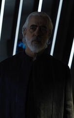

Brother Dask
Brother Dusk es uno de los personajes principales de la serie Foundation de Apple TV +. El hermano Dusk es el miembro vivo más antiguo de la dinastía genética gobernante del Imperio Galáctico. Como emperador retirado, no se arrepiente, es obstinado y no debe ser subestimado. El hermano Dusk es interpretado por Terrence Mann, apareciendo por primera vez en el episodio "La paz del emperador".
Informacion general
El Hermano Dusk es el Emperador retirado del Imperio Galáctico, que actúa como consejero y mentor de sus "hermanos", el actual Emperador Brother Day, y el Emperador ascendente, el Hermano Dawn. Una de las funciones que lleva a cabo el hermano Dusk es trabajar en el Mural de las Almas y ampliar su legado.
Cleon XI ocupó el cargo de Hermano Dusk durante los eventos que rodearon el tribunal de Hari Seldon por alta traición y conspiración para desestabilizar el Imperio Galáctico. Dusk es un defensor de matar a Seldon y sus seguidores después de la revelación de que la psicohistoria ha predicho la caída del Imperio dentro de cinco siglos. Cuando el Puente de las Estrellas fue destruido por terroristas, y Hari fue llevado ante el Imperio directamente, recomendó que poner fin a la clonación imperial podría ralentizar la caída unos pocos siglos más. Dusk reaccionó airadamente a su declaración y salió furioso. En los meses posteriores a la caída del Puente Estelar y la creación de Scar, Dusk visitó las ruinas y habló con el Sacerdote Vidente Trantoriano que se había interesado en Gaal Dornick. Quería saber si Gaal realmente era un Vidente y podía ver la caída del Imperio.
Treinta y cinco años después del bombardeo del Star Bridge, el hermano Dusk se acercaba al final de su vida y se preparaba para su ascensión. Mientras lo hacía, se convirtió en el hermano Darkness y su posición fue tomada por el anterior Brother Day, Cleon XII. En la ceremonia, el nuevo Hermano Dawn lloró, haciendo que Darkness creyera que algo andaba mal con el niño. Sin embargo, Demerzel lo guió a la ascensión antes de que pudiera preocuparse más por ello.
Cleon XII se convirtió en Hermano Dusk tras la ascensión del Dusk anterior, Cleon XI. Como el Cleon que había presidido la crisis de Hari Seldon, el bombardeo del Puente de las Estrellas y los posteriores ataques a Anacreonte y Thespis, el actual Brother Day consideró que había dejado al Imperio en una confusión a través de acciones impulsivas. Desde su mandato, la insurgencia se ha fermentado en la propia Trantor, así como en otras crisis. El hermano Dusk había planeado viajar para asistir al funeral de Proxima Opal y ayudar a instalar a su sucesor preferido, Zephyr Gilat, para ser el nuevo líder del luminismo. Sin embargo, Day lo anuló y le pidió que se quedara en Trantor para solucionar las crisis en las que había participado.